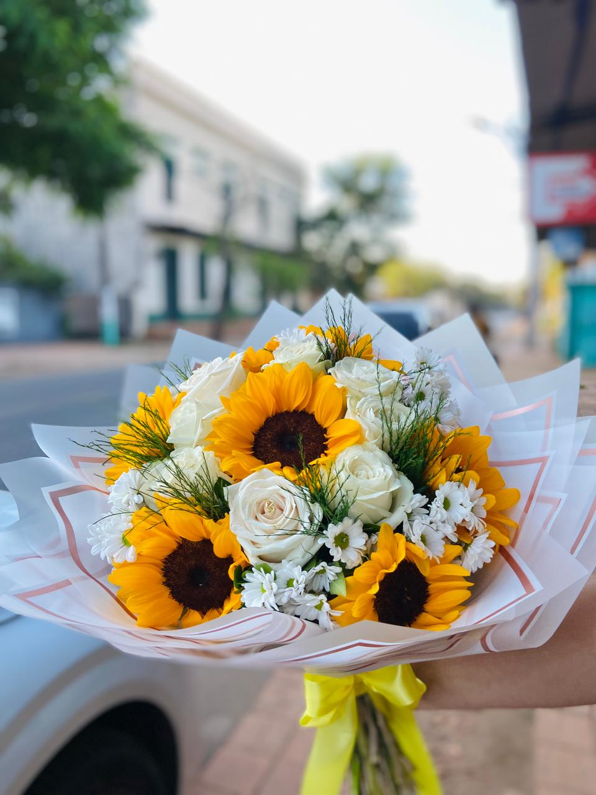
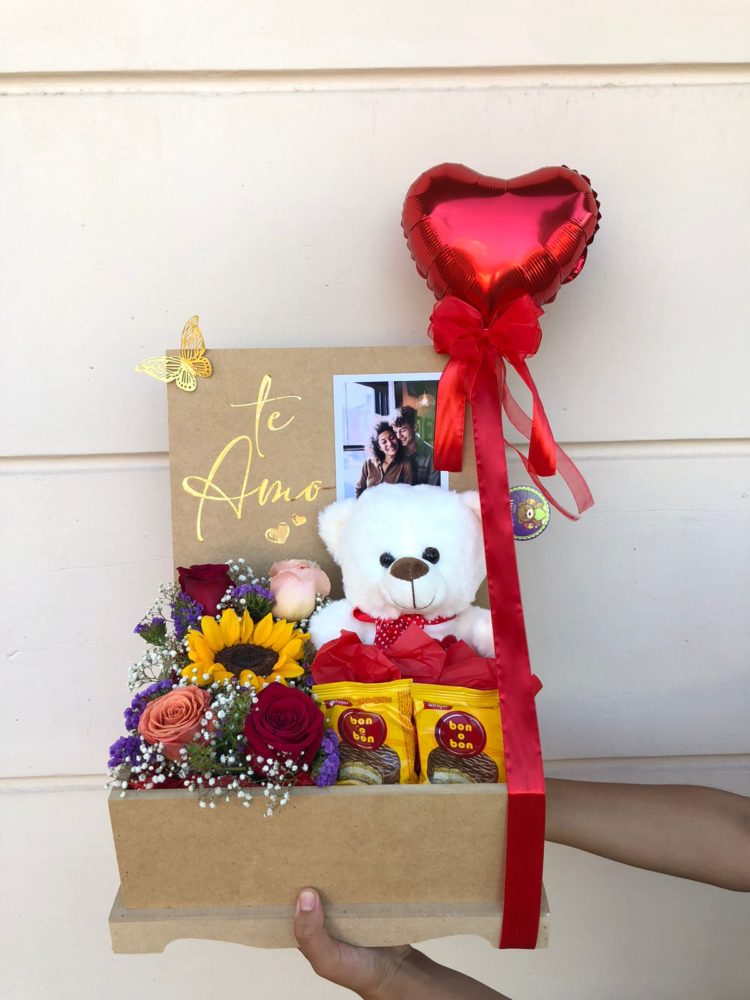
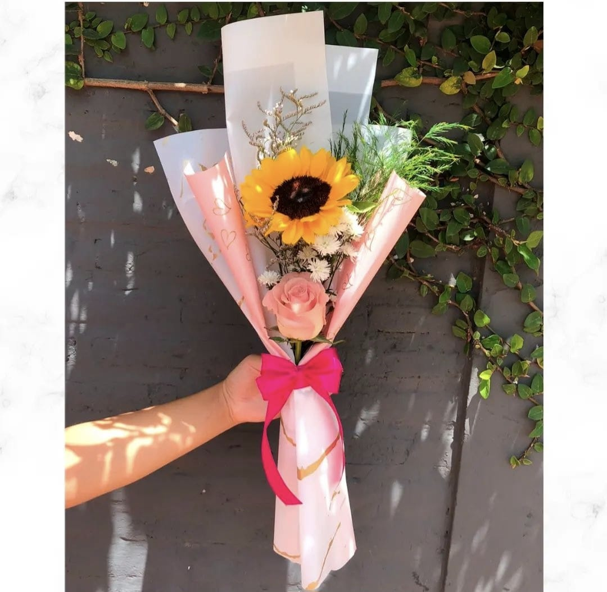

Cómo cuidar tu ramo para que dure más
Noviembre de 2026
Corta 2 o 3 cm de los tallos en diagonal apenas lo recibas y ponlo en un florero con agua limpia.
Quita las hojas que queden bajo el agua, cambia el agua cada dos días y mantén el ramo lejos del sol directo y del calor.

Cajas con flores: cómo elegir la ideal
Noviembre de 2026
Piensa primero en la ocasión y en el tamaño: una caja pequeña es un detalle, una grande es toda una sorpresa.
Luego elige colores y extras, como chocolates, un peluche, un globo o una foto con mensaje.

Qué flores regalar según la ocasión
Noviembre de 2026
Las rosas son el clásico para el amor. Los girasoles transmiten alegría y gratitud, y las flores blancas acompañan con calma en las despedidas.
Si dudas, cuéntanos para quién es y armamos la combinación.